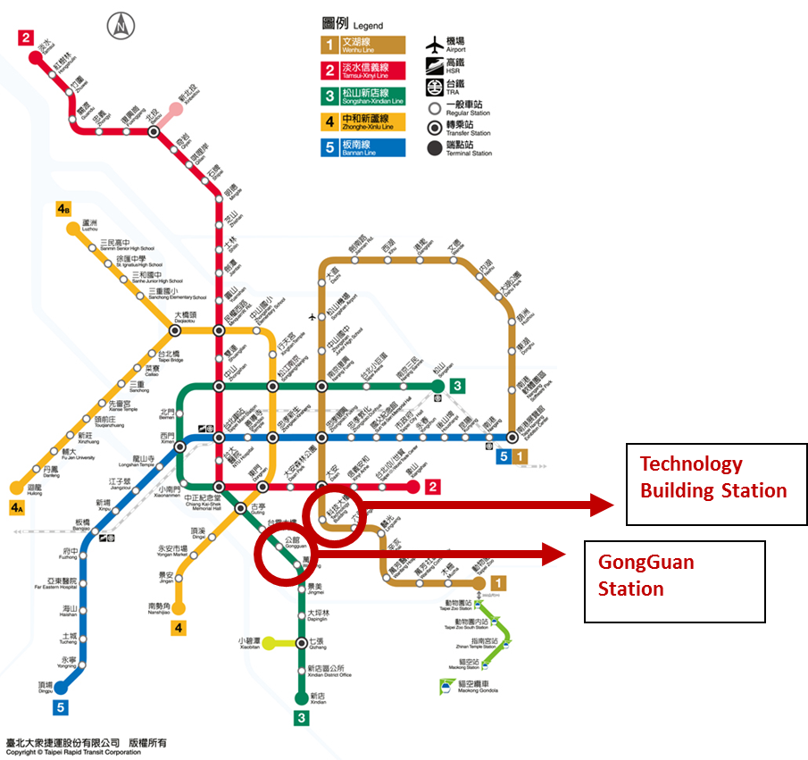

Map of NTU College of Law
Law Buildings
There are two law buildings- Tsai Lecture Hall (Building 1) and Wan Tsai Research Hall (Building 2). Both buildings are located next to the XinHai Gate at the north point of the campus.

For the complete locations of buildings and facilities, please see the NTU campus map.
Public Transportation
National Taiwan University located right in the center of Taipei city where can be easy accessed by public transportation. You may arrive the Law buildings either by MRT or bus.

- By MRT
College of Law is located next to the XinHai Gate at the north point of the campus. By MRT, you may take Wenhu Line (Brown Line) to Technology Building Station and take a 10-minute walk along FuXing S. Road to FuXing-XinHai intersection, where the XinHai Gate is. The Tsai Lecture Hall will be on the left hand side of the Gate. Or you may take Songshan-Xindian Line (Green Line) to GongGuan Station and take a 15-minute walk across the campus.
Metro Taipei Info: http://english.metro.taipei/
By Bus
You can also arrive College of Law by buses at HePing Senior High School, Youth Activity Center, Fuxing South Road Intersection, and Gongguan Station.
| Stop | Buses Lines |
| HePing Senior High School | 1、254、275、275 Sub、294、611、650、905、905 Sub、906、906 Sub、909、935、1032、1552、NK(Shuanghe) |
| Youth Activity Center | 237、295、298、298 Shuttle |
| Fuxing South RoadIntersection | 3、15、18、52、72、74、207、211、235、237、278、278 Shuttle、284、284 Express、295、662、663、680、Heping Main Line、Dunhua Main Line |
Taipei Bus Info:
English Website| https://ebus.gov.taipei/
Toll Free| 0800-00-5284
Department Office Location
Students interested in attending our College are welcome to visit us during weekdays from 9 A.M to 5 P.M. Our Office is located on the 6th Floor of Tsai Lecture Hall. The office is able to help you with
any admission questions you may have, assist with graduation requirements and provide consultation regarding all aspects of studying at College of Law. We do not organize campus tours. However, students are encouraged to explore
the campus at their leisure.